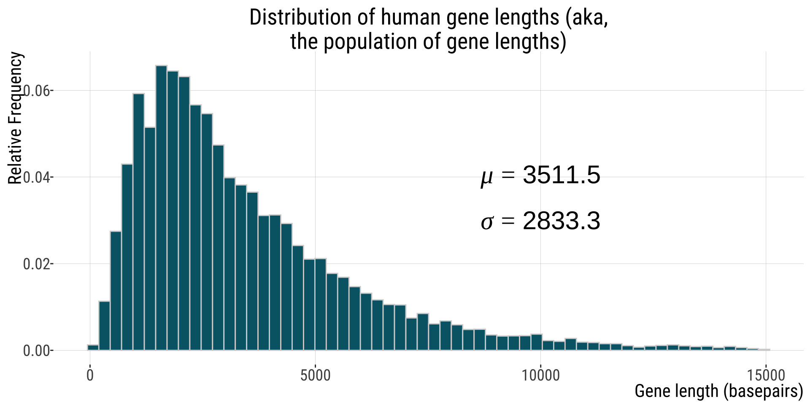
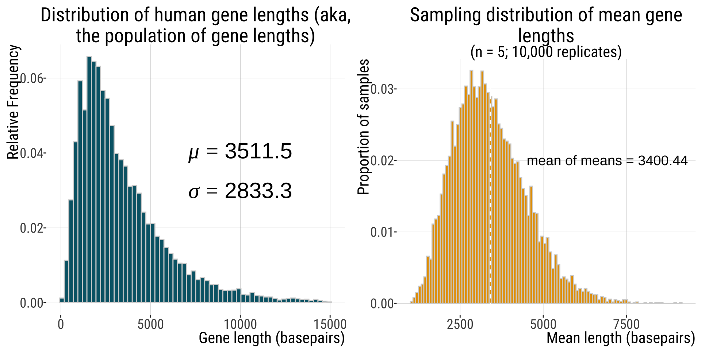
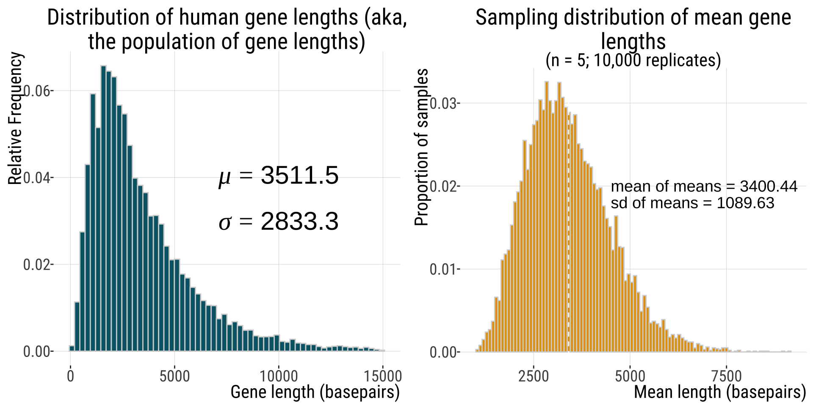
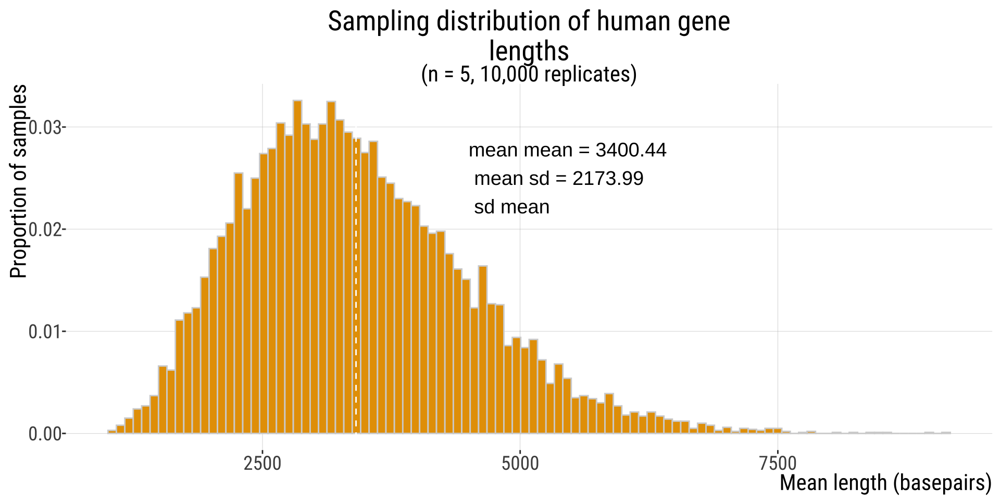

## # A tibble: 5 × 1
## size
## <dbl>
## 1 3877
## 2 3759
## 3 5014
## 4 708
## 5 48004.2.Estimation with Uncertainty
Bárbara D. Bitarello
2025-10-27
Outline
Sampling - what’s the point?Getting a feel for samplingThe sampling distribution - there’s MORE!
Standard error
Standard error of the mean
To be continued:
Confidence intervals
CI of the mean
Error bars - common mistakes
Pseudo-replication
Recap question
Which of the following describes the sampling distribution of an estimate?
A. The set of all values you get in a given sample from a population.
B. The set of all values you might get when you sample a population.
C. The set of all values in a given population.
D. The set of all values in a given sample.
Recap Question
Which of the following describes the sampling distribution of an estimate?
A. The set of all values you get in a given sample from a population.
B. The set of all values you might get when you sample a population.
C. The set of all values in a given population.
D. The set of all values in a given sample.
Recap Question 2
The standard deviation of an estimate’s sampling distribution is called which of the following?
A. Standard distribution.
B. Standard error.
C. Standard probability distribution.
D. Standard variation.
Recap Question 2
The standard deviation of an estimate’s sampling distribution is called which of the following?
A. Standard distribution.
B. Standard error.
C. Standard probability distribution.
D. Standard variation.
In the face of chance (randomness of my sample), can I trust my estimate? And how much can I trust it?
Two key measures of precision of an estimate
Standard Error
Confidence Intervals
The Standard Error: Definition
The standard error reflects the difference between an estimate and the target parameter value.
The standard error predicts the sampling error of the estimate.
The standard error of an estimate is the standard deviation of its sampling distribution.
We could in principle calculate SE for any summary statistic but we will focus on the most common – the standard error of the mean.
The Standard Error of the Mean (SEM)
The SEM quantifies how precisely you know the population mean.
Because we rarely know the population standard deviation,\(\sigma\), we cannot find the parameter \(\sigma_{\bar{Y}}=\frac{\sigma}{\sqrt{n}}\) , the standard error of the population mean.
But, we can use the sample standard deviation, \(s\), to estimate \(SEM_{\bar{Y}}=\frac{s}{\sqrt{n}}\), the standard error of the sample mean.
We can also estimate \(SEM_{\bar{Y}}\) by taking the standard deviaton of the sampling distribution of sample means of a given size.
Example: human gene lengths
Human gene lengths

Note: parameters shown are for full dataset (n=20,290) but 26 genes with length > 15,000 were omitted from this plot.
A random sample of five genes
A random sample of five genes
Summarising my sample of \(n=5\):
| Mean | SD |
|---|---|
| 3631.6 | 1724.824 |
Another random sample of five genes
Summarising my other sample of \(n=5\):
| size |
|---|
| 4569 |
| 1735 |
| 1110 |
| 2493 |
| 3184 |
| Mean_length | SD_length |
|---|---|
| 2618.2 | 1341.281 |
I can start combining those different estimates
| Mean_length | SD_length |
|---|---|
| 3631.6 | 1724.824 |
| 2618.2 | 1341.281 |
Ten samples of five 5 genes
| replicate | mean_length | sd_length |
|---|---|---|
| 1 | 3585.2 | 2530.974 |
| 2 | 2405.4 | 1223.324 |
| 3 | 2506.8 | 1793.417 |
| 4 | 3943.8 | 2151.380 |
| 5 | 4638.6 | 1323.007 |
| 6 | 3704.6 | 3210.567 |
| 7 | 3576.4 | 1627.570 |
| 8 | 6495.8 | 4187.037 |
| 9 | 4309.0 | 3429.975 |
| 10 | 4077.6 | 2471.615 |
| mean_of_means | sd_of_means | SEM | Real_SEM |
|---|---|---|---|
| 3924.32 | 2394.89 | 1149.66 | 2438.804 |
Many
Sampling Distribution
Compare the pop & the sample dist

- Mean parameter estimates of a sampling distribution should equal population parameters.
Compare the pop & the sample dist

- The width (standard deviation) of a population (\(\sigma=2833.3) exceeds that of its sampling distribution (\)s_{}=1277.22)
The Standard Error & The Sampling Distribution
The standard error is the standard deviation of the sampling distribution
The standard deviation of this distribution is \(1277.22\) basepairs
So \(1277.22\) is our estimate for the standard error of the mean based on our sampling distribution

The Standard Error & The Sampling Distribution

You might be thinking, but how would I get such a sampling distribution?
It turns out there is a clever way of resampling from your own sample to estimate an (unknown) sampling distribution!
Bootstrapping!
use the observed sample to estimate the population distribution.
then samples can be drawn from the estimated population and the sampling distribution of any type of estimator can itself be estimated.

Uncertainty
Because we rarely know the population sd \((\sigma)\), we cannot find the parameter \(\sigma_{\bar{Y}}= \sigma_Y / \sqrt{n}\) .
But, we can use the sample standard deviation (\(s\)) to estimate the standard error \(SEM_{\bar{Y}}= s / \sqrt{n}\)
Compare
The sampling distribution estimate of \(SEM_{\bar{Y}}=1277.22\)
and
the parameter Standard Error of the population mean
\(\sigma_{\bar{Y}}=\frac{\sigma_{Y}}{\sqrt{n}}\)
\(=\frac{2833.2}{\sqrt{5}}=1267.046\)
These are indeed very similar! \(SEM_{\bar{Y}}\) is an estimate of \(\sigma_{\bar{Y}}\) and is itself estimated with error.
Sample size, uncertainty, and the standard error
SE Decreases with Sample Size
The standard error goes down as a sample size goes up.
Using the example from before:
\(\sigma_{\bar{Y}}=\frac{\sigma_{Y}}{\sqrt{n}}\)
if \(n=5\)
\(\sigma_{\bar{Y}}=\frac{2833.3}{\sqrt{5}}=1267.09\)
if \(n=100\)
\(\sigma_{\bar{Y}}=\frac{2833.3}{\sqrt{100}}=283.33\)
Small Samples, Large Uncertainty
Uncertainty increases as sample size decreases.
Therefore, extreme values are often associated with small sample size.
Treat simple summary statistics with skepticism.
Be sure to consider uncertainty before being misled by exceptional values.
Simulators to help you grasp this:
- https://shiny.abdn.ac.uk/Stats/apps/app_sampling/
- https://www.zoology.ubc.ca/~whitlock/Kingfisher/SamplingNormal.htm
- http://shiny.calpoly.sh/Sampling_Distribution/
That’s all for today

From: makeameme.org
B215: Biostatistics with R